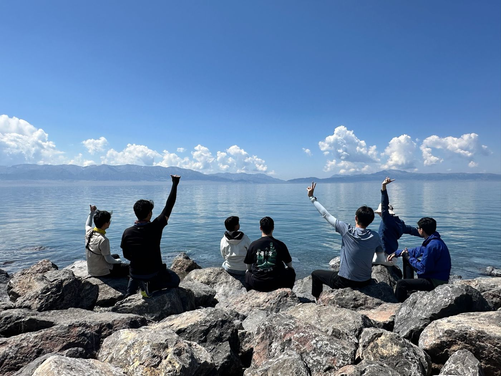
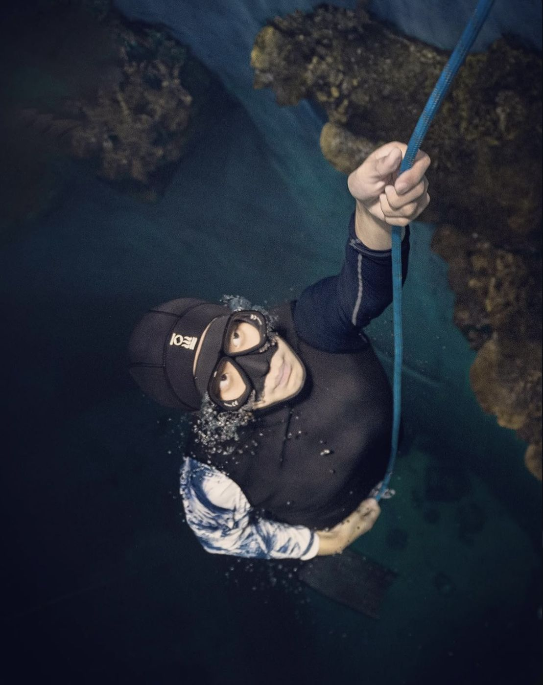
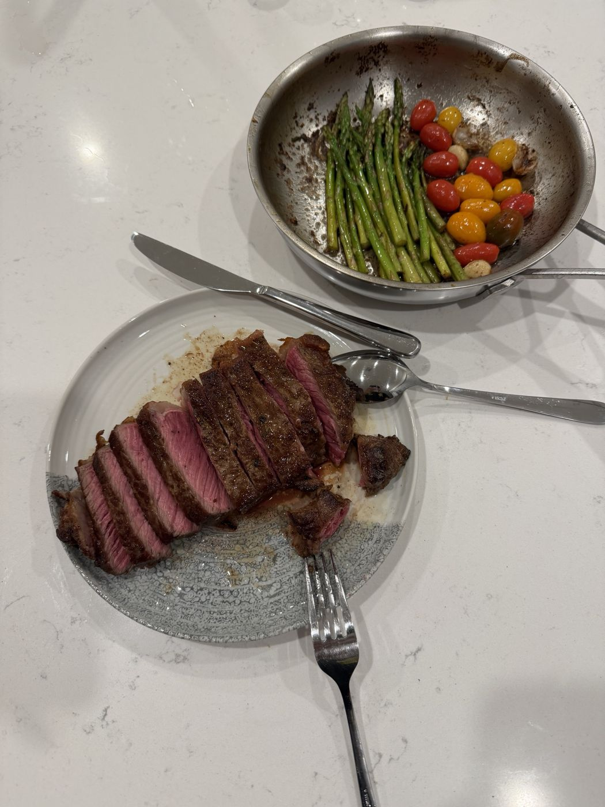
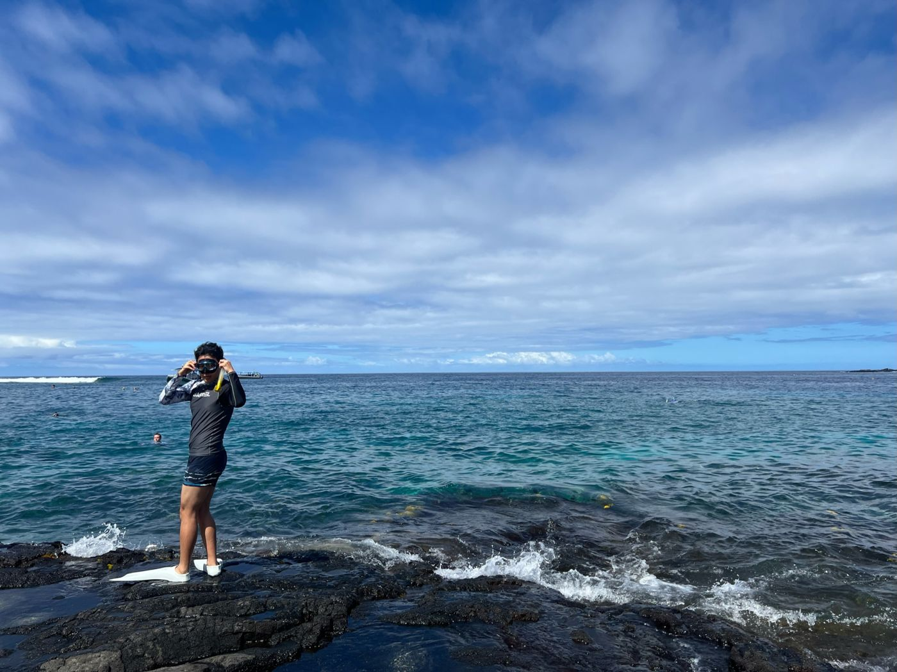
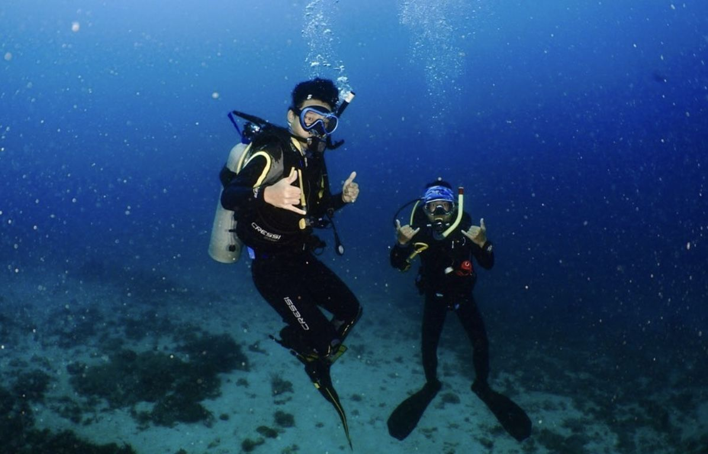
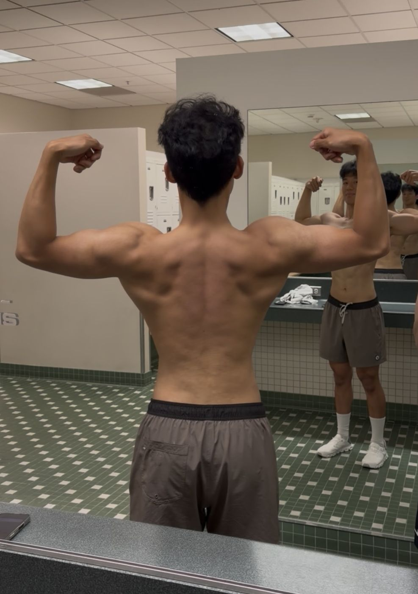
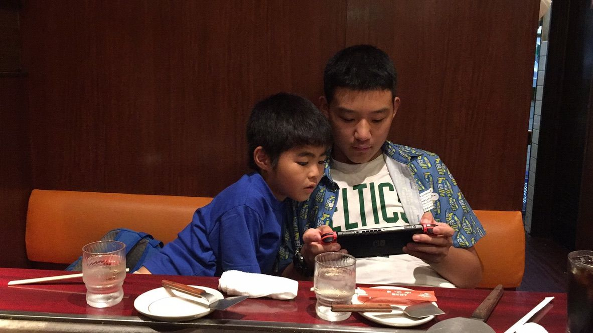
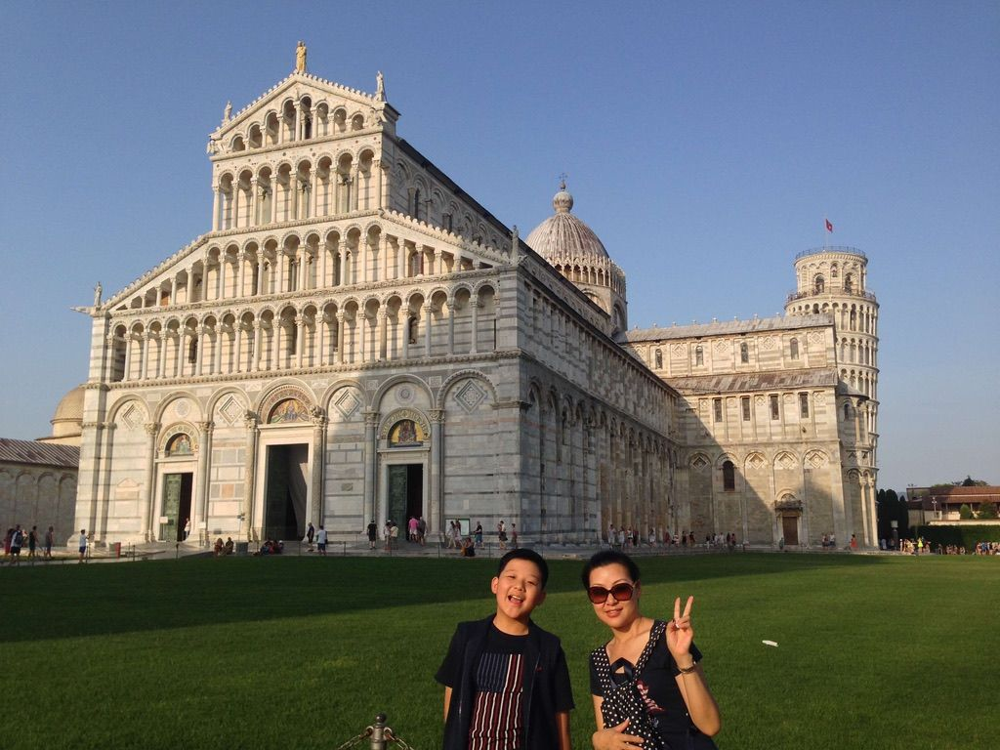
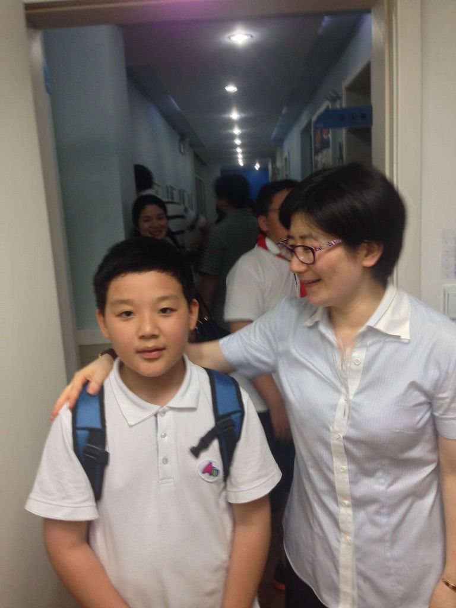

Life
The parts of me that aren't on my CV.

Sayram Lake, Xinjiang One last dance: a trip with my closest friends.
Music Playing 普通朋友, a song I just learned, with friends at a guitar shop.

Freediving, Suzhou Earned my AIDA 2★ certification at the Suzhou aquarium. My deepest dive so far is 16 m on one breath.

Kitchen Reverse-seared steak, my signature dish.

Two Step, Hawaii Getting ready to snorkel. We saw a pod of dolphins that day.

Puerto Galera, Philippines Scuba diving, where I earned my PADI Advanced Open Water certification.

UCI ARC One full bulk and cut, from 190 to 150 lbs (86 to 68 kg).

Osaka, Japan Playing Switch with my cousin while waiting for okonomiyaki.

Pisa, Tuscany With my mom, who showed me the world first.

Shanghai My last day of primary school, with my homeroom teacher at Aiju Primary School.